MIỀN BẮC
1. Vịnh Hạ Long
Kỳ quan thiên nhiên thế giới với hàng nghìn đảo đá vôi xanh ngắt trên sóng nước bồng bềnh.
VẺ ĐẸP BẤT TẬN CỦA DẢI ĐẤT HÌNH CHỮ S
Hành trình khám phá 15 danh lam thắng cảnh kỳ vĩ, 10 di tích lịch sử ngàn năm văn hiến và 10 tinh hoa ẩm thực trứ danh 3 miền.
Trải qua hàng ngàn năm dựng nước và giữ nước, Việt Nam tự hào sở hữu hệ thống di tích lịch sử hào hùng, tài nguyên thiên nhiên tươi đẹp và kho tàng ẩm thực vô cùng phong phú.
Nhấn nút "Khám phá chi tiết" ở từng địa danh để mở bản đồ Google Maps và xem trọn bộ sưu tập ảnh sắc nét.
Bắt đầu hành trình ↗Chọn miền để lọc 15 tọa độ danh lam thắng cảnh nổi tiếng.
Kỳ quan thiên nhiên thế giới với hàng nghìn đảo đá vôi xanh ngắt trên sóng nước bồng bềnh.
Thị trấn mờ sương, ruộng bậc thang kỳ vĩ và nóc nhà Đông Dương cao 3.143m.
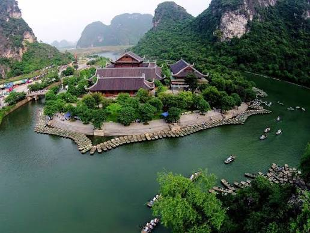
MIỀN BẮCVịnh Hạ Long trên cạn với những dòng sông ngầm xuyên qua lòng núi đá vôi uốn lượn.
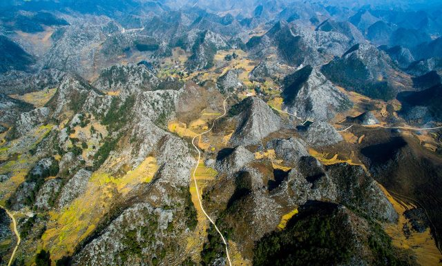
MIỀN BẮCĐèo Mã Pí Lèng hiểm trở, dòng sông Nho Quế xanh ngọc bích và hoa tam giác mạch.
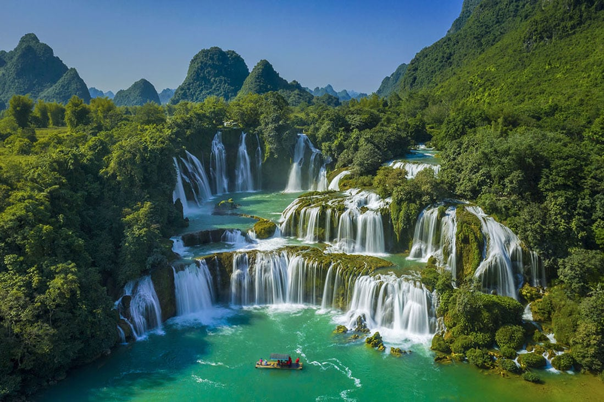
MIỀN BẮCThác nước tự nhiên lớn nhất Đông Nam Á bọt tung trắng xóa vùng biên cương.
Bãi biển quyến rũ nhất hành tinh, Cầu Vàng biểu tượng và không gian thiên đường Bà Nà.
Vương quốc hang động thế giới sở hữu Sơn Đoòng và Động Thiên Đường tuyệt mỹ.
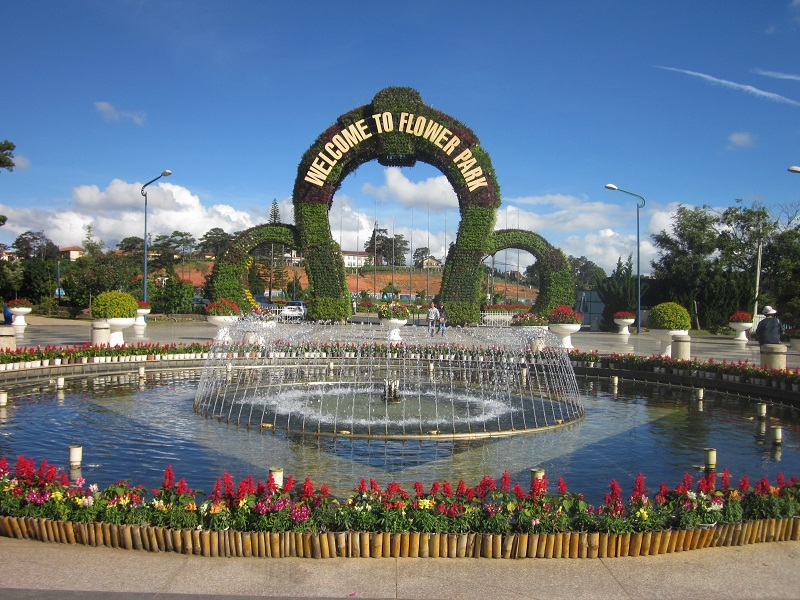
MIỀN TRUNGThành phố ngàn hoa thơ mộng với rừng thông mờ sương và Hồ Xuân Hương.
Thiên đường biển ngọc, bãi cát vàng mịn trải dài và VinWonders sôi động.
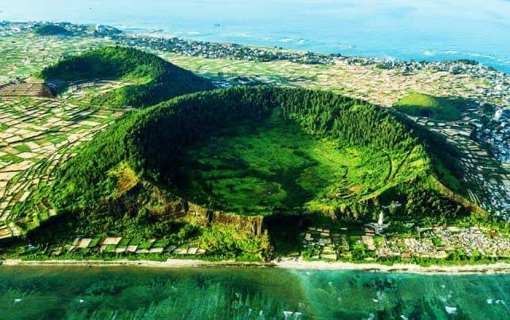
MIỀN TRUNGĐảo tỏi thiên đường hình thành từ tàn tích núi lửa triệu năm giữa biển khơi.
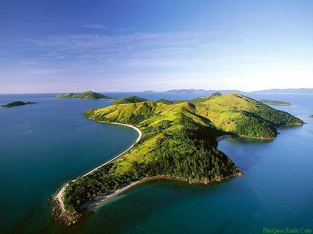
MIỀN NAMBãi Sao cát trắng như kem, cáp treo vượt biển Hòn Thơm và hoàng hôn tím mộng mơ.
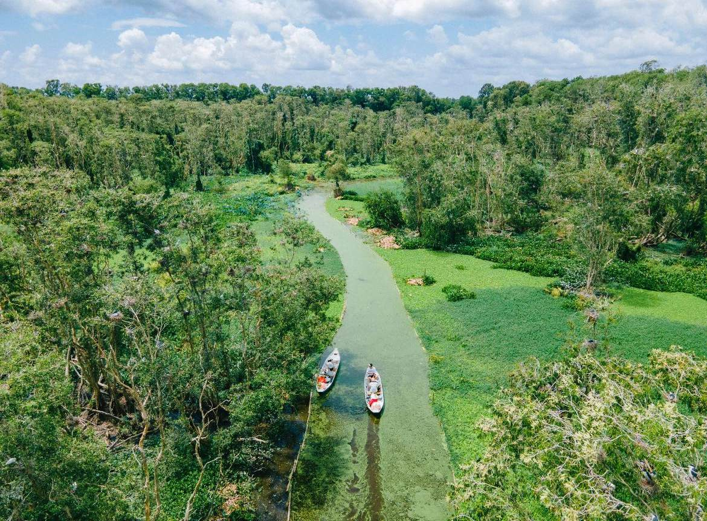
MIỀN NAMKhông gian xanh bèo cám trải rộng của miền nước nổi Tây Nam Bộ.
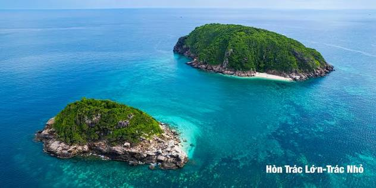
MIỀN NAMHòn đảo huyền thoại với thiên nhiên hoang sơ, biển xanh ngọc và di tích lịch sử tâm linh.
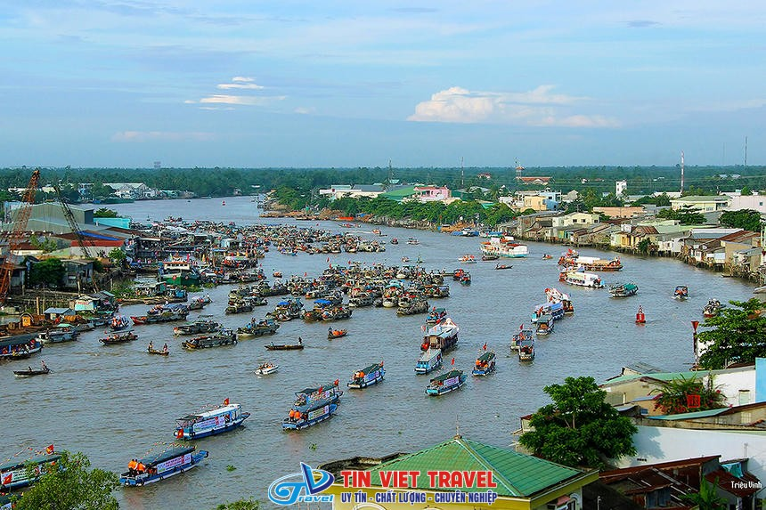
MIỀN NAMVăn hóa sông nước độc đáo miền Tây với hàng trăm ghe thuyền mua bán sầm uất trên sông.
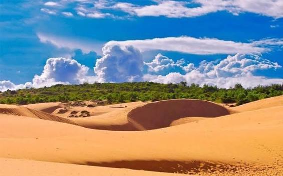
MIỀN NAMSa mạc thu nhỏ với những đồi cát đỏ, cát trắng đổi hình dạng liên tục theo làn gió.
Những di sản kiến trúc ngàn năm gắn liền với bề dày văn hiến hào hùng.
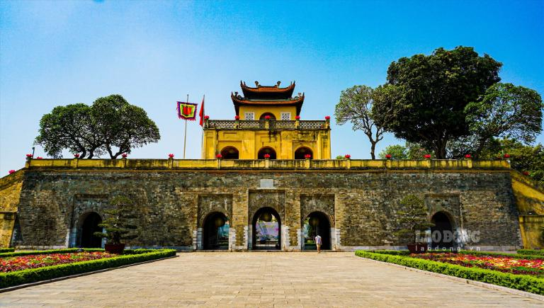
HÀ NỘITrung tâm quyền lực chính trị trải dài qua 13 thế kỷ triều đại phong kiến Việt Nam.
 THỪA THIÊN HUẾ
THỪA THIÊN HUẾKinh đô triều Nguyễn với Ngọ Môn, Tử Cấm Thành và hệ thống lăng tẩm hoàng gia cổ kính.
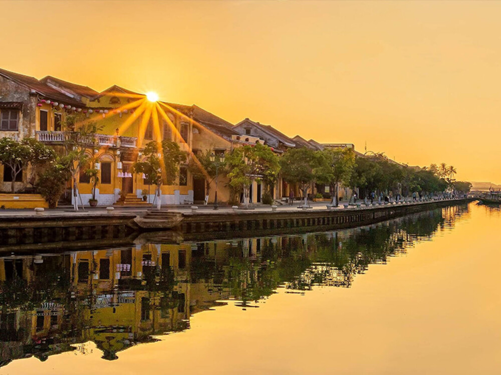
QUẢNG NAMThương cảng quốc tế thế kỷ 16 preserved nguyên vẹn mái ngói rêu phong và Chùa Cầu.
 HÀ NỘI
HÀ NỘITrường đại học đầu tiên của Việt Nam xây dựng năm 1070 với Khuê Văn Các biểu tượng.
 TP. HỒ CHÍ MINH
TP. HỒ CHÍ MINHCông trình kiến trúc lịch sử chứng nhân cho ngày giải phóng miền Nam 30/4/1975.
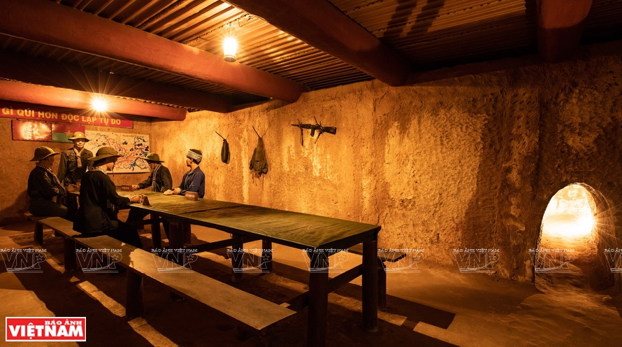
TP. HỒ CHÍ MINHMạng lưới mê cung trong lòng đất dài hơn 250km được mệnh danh là thành phố ngầm.
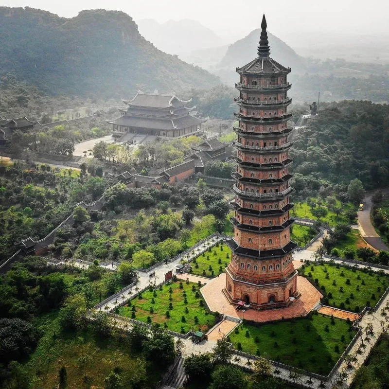
NINH BÌNHNgôi chùa sở hữu nhiều kỷ lục Châu Á với tượng Phật bằng đồng dát vàng khổng lồ.
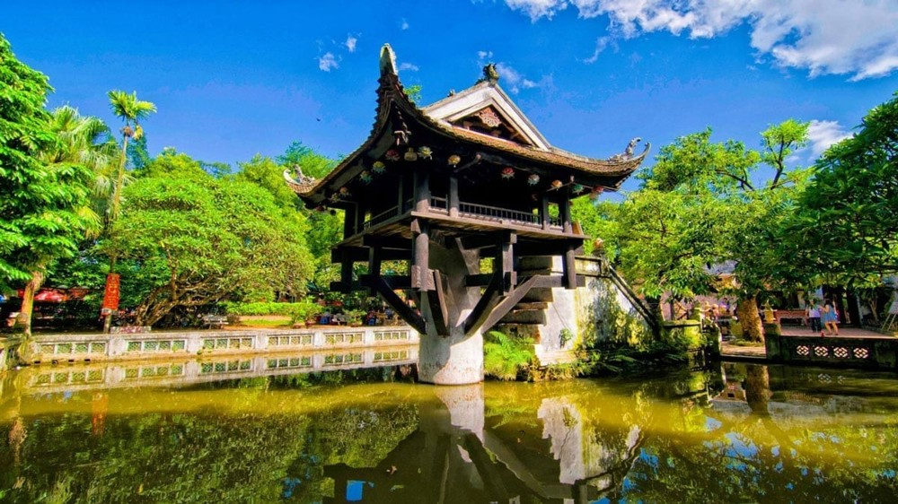
HÀ NỘIĐóa sen độc đáo vươn lên giữa hồ nước xây dựng từ thời vua Lý Thái Tông năm 1049.
 QUẢNG NAM
QUẢNG NAMQuần thể tháp Chăm cổ kính ẩn mình giữa thung lũng núi rừng Quảng Nam.
 PHÚ THỌ
PHÚ THỌNơi thờ tự các Vua Hùng có công dựng nước Văn Lang - Cội nguồn của người Việt.
Hương vị đặc trưng nổi tiếng làm nên thương hiệu ẩm thực Việt Nam.
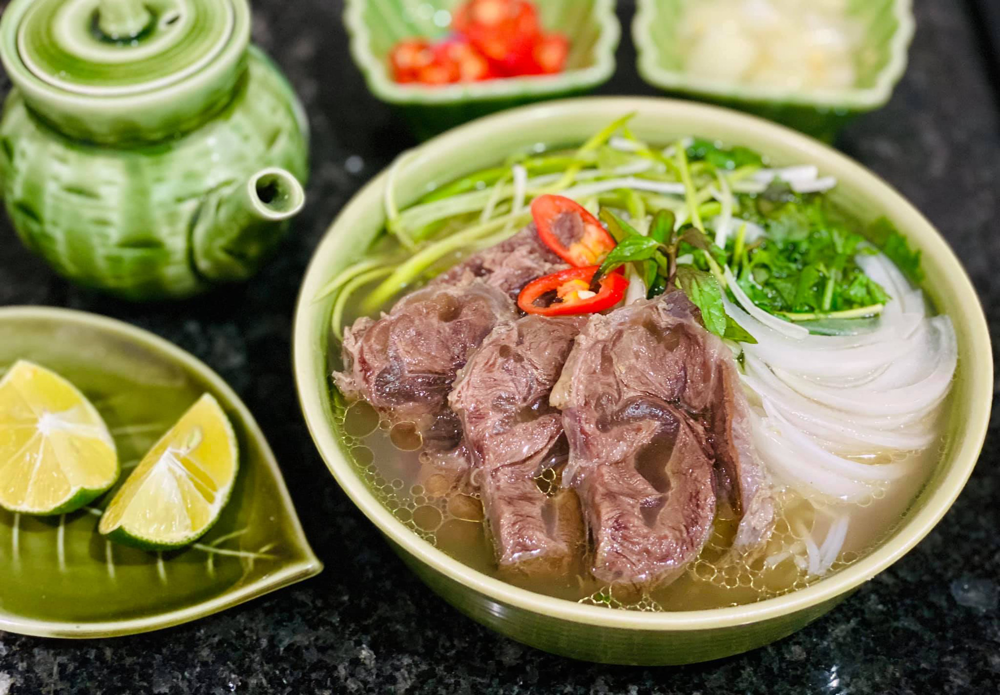
MIỀN BẮCNước dùng thanh ngọt hầm từ xương bò nguyên chất thơm lừng quế hồi.
 MIỀN BẮC
MIỀN BẮCThịt nướng chả viên than hoa thơm phức chìm trong nước mắm chua ngọt.
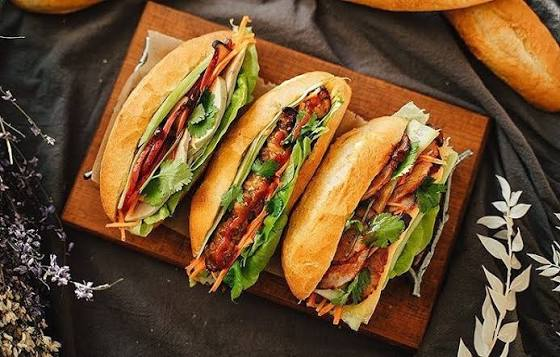
TOÀN QUỐCVỏ giòn rụm kẹp pate, chả lụa, dưa góp và nước sốt đậm đà nổi tiếng thế giới.
 MIỀN TRUNG
MIỀN TRUNGĐậm đà hương vị sả và mắm ruốc đặc trưng Cố đô cùng giò heo béo ngậy.
 MIỀN TRUNG
MIỀN TRUNGSợi mì dai vàng óng ăn kèm tôm thịt, lạc rang và bánh tráng giòn rụm.
 MIỀN TRUNG
MIỀN TRUNGĐặc sản Phố cổ với sợi mì ngâm nước tro, xá xíu thơm ngậy và ram giòn.
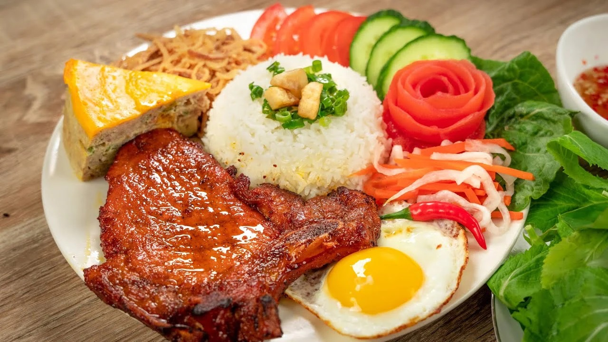
MIỀN NAMSườn nướng mật mỡ hành thơm nức, bì chả và nước mắm kẹo ớt tỏi.
Vỏ bánh giòn đụm màu nghệ kẹp tôm thịt giá đỗ cuốn rau rừng sông nước.
 MIỀN NAM
MIỀN NAMBún tươi quậy ngay tại chỗ cùng chả tôm chả cá tươi rói đậm đà.
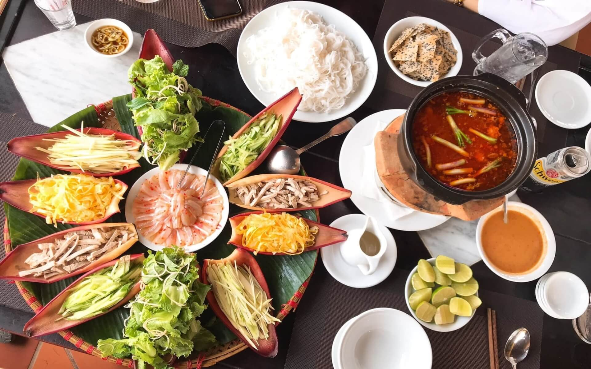
MIỀN NAMMón ăn bày trên bẹ bắp chuối gồm cá mai tươi ngon, trứng chiên và sốt đậu lạc.
Thước phim thực tế ngắn ngắm nhìn vẻ đẹp trọn vẹn Việt Nam.
Đi để thấy đất nước mình
đẹp đến nhường nào.
Hãy là một du khách văn minh: tôn trọng văn hóa địa phương, bảo vệ môi trường và gìn giữ di sản.
Trở về đầu trang ↑